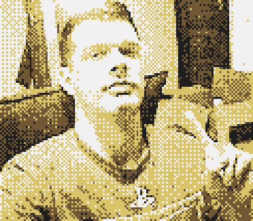

◈ Poppy's Cult ◈
◈ Welcome, seeker of the unknown. The enigmatic Cult of Poppy does not openly seek new members at this time. However, if you possess the determination to reach out to a known member, an opportunity to inquire about membership may present itself. Proceed with caution, for the path to enlightenment may be fraught with peril and secrecy.
◈ return ◈

My handle around the wired is Kryptonaut (et al), but you may call me Knaut, Krypto, or Kato.
↓ ↓ ↓ ↓ ↓
_descriptors ::
#WINDOsysadmin
#LINUXsysadmin
#CSISundergrad
#FICTIONwriter
#NAVYveteranST
#OLDNETfanatic
#DEIST/thelema
◈ return ◈